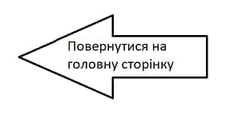

Перший список:
- Троянди
- Гвоздики
- Тюльпани
- Ромашки
Другий список:
- Фрукти:
- Ананас
- Апельсин
- Банан
- Яблуко
- Мандарин
- Овочі:
- Картопля
- Огірок
- Буряк
- Морква
- Баклажан
- Ягоди:
- Полуниця
- Малина
- Смородина
Третій список:
- Підприємство 1
- Керівник 1
- Робітник 1
- Робітник 2
- Робітник 3
- Керівник 2
- Робітник 1
- Робітник 2
- Робітник 3
- Керівник 3
- Робітник 1
- Робітник 2
- Робітник 3
- Підприємство 2
- Керівник 1
- Робітник 1
- Робітник 2
- Керівник 2
Четвертий список:
- Король Магнум XLIV
- Король Зигфрид XVI
- Король Сигизмунд XXI
- Король Хусбрандт I
П'ятий список:
- Список
- Список - це перерахування елементів. XHTML дозволяє створювати три типи списків:
- маркований список, нумерований список, список визначень
- Марковані списки
- Це списки, в яких перед кожним елементом виводиться спеціальний маркер.
- Маркований список створюється за допомогою контейнерного тега ul, в якому міститься опис всіх елементів списка
- Елементи списку описуються за допомогою контейнерного тегу li. Також є можлівість зміни типу маркера
- По замовчуванню маркер має вигляд зафарбованого кола.
- Крім нього, існує можливість використовувати порожнє коло та зафарбований квадрат.
- Нумерований список
- Це перерахування елементів з автонумерацією. Нумеровані списки створюються за допомогою контейнерного тегу ol,
- в якому описуються елементи списку. Елементи описуються за допомогою контейнерного тегу li.
- Є можливість задання типу нумерації. Для цього необхідно задати відповідне значення атрибуту type тега ol.
